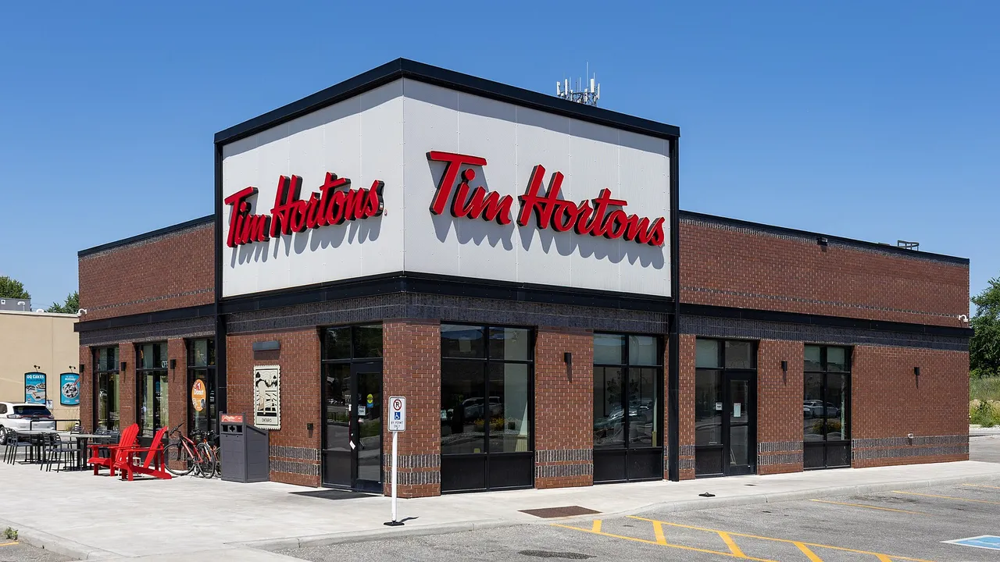

Unofficial fan guide - not affiliated with Tim Hortons
Roughly 3,900 restaurants, and the number is finally growing again. Here is the official count, the province split and why different sources give different totals.
Full Menu / Blog / How Many Tim Hortons in Canada

There are roughly 3,900 Tim Hortons restaurants in Canada in 2026. Its parent company reported 4,570 Tim Hortons in Canada and the U.S. combined on June 30, 2026, and about 700 of those are American. Tim Hortons itself describes its Canadian network as roughly 4,000 locations, the most of any restaurant chain in Canada.
Restaurant Brands International (RBI), which owns Tim Hortons, does not publish a Canada-only number. It reports Tim Hortons in Canada and the U.S. as one segment, and that segment had 4,570 restaurants on June 30, 2026, up from 4,521 a year earlier.
Subtract the U.S. and you get the Canadian figure. Location tracker ScrapeHero counted 697 U.S. Tim Hortons on August 26, 2026, which leaves about 3,870 in Canada. That fits what Tim Hortons executives told The Globe and Mail in May 2026, when they described the chain as having roughly 4,000 Canadian locations.
Totals you see online range from about 3,500 to more than 4,000, because each source counts something different. Official filings count full restaurants. Map-based trackers scrape listings, which can miss self-serve kiosks or count a closed store twice. Older articles are simply out of date.
| Source | Count | As of | What it counts |
|---|---|---|---|
| RBI quarterly filing | 4,570 | June 30, 2026 | Canada + U.S. combined |
| RBI minus U.S. tracker count | ~3,870 | Mid-2026 | Canada only (estimate) |
| Tim Hortons executives | "Roughly 4,000" | May 2026 | Canada, rounded |
| ScrapeHero | 3,570 | March 10, 2026 | Map listings, Canada |
| POIData | 4,073 | August 2025 | Map listings, Canada |
If you need one number to quote, "about 3,900" is the safest. It comes from the company's own filing, adjusted for the U.S.
Ontario has the most Tim Hortons by a wide margin, with close to half of all Canadian locations. That makes sense, because the chain started in Hamilton, Ontario, in 1964. Quebec, Alberta and British Columbia follow.
| Province | POIData (Aug 2025) | ScrapeHero (Mar 2026) |
|---|---|---|
| Ontario | 1,928 | 1,822 |
| Quebec | 647 | 556 |
| Alberta | 436 | 391 |
| British Columbia | 391 | 321 |
| Nova Scotia | 165 | 127 |
| New Brunswick | 117 | 104 |
| Manitoba | 115 | 100 |
| Saskatchewan | 101 | 75 |
| Newfoundland and Labrador | 63 | 51 |
| Prince Edward Island | 23 | 18 |
The two trackers disagree on totals, but they agree on the order. Ontario has about half of all locations and Quebec about 16%. Treat each figure as an estimate, not an official count.
Toronto has the most Tim Hortons of any Canadian city, followed by Calgary and Edmonton. ScrapeHero's March 2026 city list puts Toronto at 176 locations, Calgary at 132, Edmonton at 113, Mississauga at 109 and Winnipeg at 79.
Those city counts use postal addresses, so Toronto's figure does not include North York (90) or Scarborough (79). Counted together, the old Metro Toronto area has well over 300 Tim Hortons.
Yes. Tim Hortons plans to open about 80 new Canadian restaurants in 2026 and renovate 400 more. It announced the plan in May 2026. About a third of the new stores will be in Ontario, with more planned for Western Canada and Quebec.
This is a change of pace. Chief operating officer Naira Saeed told The Globe and Mail that the restaurant count "has been fairly static since 2019", while Canada's population grew about 10% over the same period. RBI is putting about $130 million into the 2026 plan, and franchisees are adding another $270 million.
| Year | Tim Hortons in Canada | Source |
|---|---|---|
| 1964 | 1 (Hamilton, Ontario) | Company history |
| Late 2013 | About 3,500 | Wikipedia summary of company reports |
| End of 2018 | 3,802 | Wikipedia summary of company reports |
| 2019 to 2025 | "Fairly static" | Tim Hortons COO, May 2026 |
| Mid-2026 | About 3,900 (80 more planned) | RBI filing, adjusted for U.S. |
There were 6,209 Tim Hortons restaurants worldwide on June 30, 2026. About six in ten are in Canada, which is why the brand is still seen as Canadian even though Restaurant Brands International owns it (see who owns Tim Hortons).
Outside Canada, the U.S. has about 700 locations (see Tim Hortons in the U.S.). RBI counted 1,646 international restaurants in 21 countries and territories at the end of 2025, from Spain and the United Kingdom to Oman, Singapore and the Philippines.
The quickest way is the restaurant finder in the Tim Hortons app. It also shows each store's hours and whether it has a drive-thru.
About 3,900 in 2026. RBI reported 4,570 Tim Hortons in Canada and the U.S. combined on June 30, 2026, and roughly 700 of those are in the U.S.
Yes. Restaurant Brands International's 2025 annual report calls Tim Hortons the largest coffee and baked goods restaurant chain in Canada by number of restaurants.
Ontario, with roughly 1,800 to 1,900 locations depending on the tracker. That is close to half of all Tim Hortons in Canada.
Toronto. ScrapeHero counted 176 locations with a Toronto address in March 2026, ahead of Calgary with 132 and Edmonton with 113.
Location trackers put Quebec at about 556 to 647 Tim Hortons, making it the second-largest province for the chain after Ontario.
Alberta has roughly 390 to 440 Tim Hortons and British Columbia roughly 320 to 390, according to 2025 and 2026 location-tracker data.
Tim Hortons plans about 80 new Canadian restaurants in 2026, a third of them in Ontario, plus 400 renovations of existing stores.
6,209 as of June 30, 2026, according to Restaurant Brands International. Most are in Canada, with about 700 in the U.S. and the rest spread over 21 countries and territories.
The first Tim Hortons opened on May 17, 1964, at Ottawa Street North in Hamilton, Ontario. A Tim Hortons still operates at that corner today.
Yes, but only a handful. Location trackers list a few restaurants across Yukon, the Northwest Territories and Nunavut, far fewer than in any province.
Tim Hortons has been growing in its home market since 1964, and almost all of its stores are run by local franchisees. By late 2013 it already had about 3,500 Canadian locations.
This is an independent, unofficial guide. It is not affiliated with, endorsed by, or sponsored by Tim Hortons or Restaurant Brands International. Official counts come from RBI's 2025 annual report (Form 10-K) and its second-quarter 2026 filings. Province and city counts come from ScrapeHero (March and August 2026) and POIData (August 2025), which are third-party estimates. Expansion plans and quotes come from The Globe and Mail (May 22, 2026). Counts change as restaurants open and close. See Sources.